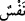
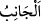
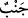
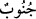
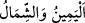
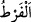
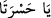
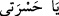
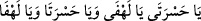
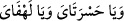
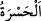
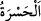
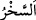
bildirmektedir. “__WORD__ kelimesinin nekre getirilmesi, bu sözü söyleyecek olanların
nefislerin/kişilerin bir kısmı olmasından dolayıdır. Ya da bütün nefislere yaymak için
çokluk ve genellik bildirmek içindir. Mânâ şu şekildedir: Herkesin şöyle dememesi için
zikredilen emirleri, yâni size emrettiklerimi yerine getirin.
Keşfü’l-esrâr’da der ki: “Araplar “__WORD__ (yan)”i “__WORD__ diye adlandırırlar.” Bu kelime
Arap dilinde çoktur. Öyle ki insanlar falan zenginin yanına gittim; filanın yanından mal
aldım, derler.
Râğıb der ki: “Cenb aslında organ demektir. Çoğulu “__WORD__dur. Sonra istiâre yoluyla,
yakın olan taraf için kullanılır olmuştur. Sağ ve sol el için “__WORD__ (sağ ve sol)”
denilmesi gibi diğer organlar da aynı şekilde istiâre yoluyla kullanılır. “__WORD__
O’nun emrinde ve bizim için belirlediği sınırında, demektir.”
Yine Râğıb der ki: “İfrât öne gitmekte aşırı gitmek, tefrît ise geri kalmakta aşırı
gitmek anlamındadır. Çünkü “__WORD__ öne geçmek demektir.”
“__WORD__nın sonundaki elif, izâfet yâsından bedeldir. Çünkü aslı “__WORD__dir. Araplar
hayıflanma/hasret/pişmanlık bildirmek için “__WORD__ ve çoğul olarak
“__WORD__ derler. Nitekim Keşfü’l-esrâr’da böyle geçmektedir.
“__WORD__ işlediği suça kişiyi sevkeden bilgisizlik sanki ortadan kalkmış gibi kaybettiği
şeye üzülmek ve pişman olmaktır. Bazıları şöyle demiştir: “__WORD__ kişinin üzüntüsünden
uzak kalacak şekilde üzülmesidir. Mânâ ise şöyledir: Ey benim hasretim ve pişmanlığım
gel artık, şimdi senin gelme vaktindir.
“Gerçekten ben alay edenlerdendim (diyeceği günden sakının)!”
“__WORD__ alay etmektir. Mânâ şöyledir: Dünyada Allah’ın diniyle ve ehlullah ile alay
edenleden olduğum halde kusurlu davrandığım için… demektir.
Katâde şöyle demiştir: Allah’a itâati zâyi ettikleri yetmezmiş gibi bir de O’na itâat
edenlerle alay etmişlerdir.”
Silsiletü’z-zeheb’de der ki:
İnsan yiyen ölüm son nefeste kişiyi gaflet uykusundan uyandırınca
Yıllarca Hakk’ın huzurunda cürm ve isyan ettiği hatırına gelir.
Altmış yetmiş yıllık ömründe hayır şer ne yaptıysa önüne düşer
Bir bir gözünün önüne getirilir; apaçık ona gösterilir
“Ah ayrıldı, yazık” nidaları yüce gök kubbede yankılanır
Hasret yüzünden gönlünden dumanlar yükselir;
o zaman hayıflanmanın faydası yoktur
Fârisî der ki: “Allah Teâlâ şöyle buyuruyor: Kim benden kaçarsa, onu yakarım! Yâni
kim benden nefsine kaçarsa, onu yarın ma’rifetullah sâhiplerinin makamlarını
gördüğünde beni kaybetmiş olmaktan dolayı duyacağı esefle yakarım. “Yazıklar olsun